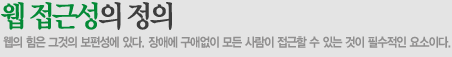

- 웹 접근성의 정의
- 우리나라 현황
- 장애인 웹 접근성
- 관련사이트
- 홍보동영상
홈 > 웹 접근성의 이해 > 웹접근성의 정의

- 월드 와이드 웹(World Wide Web)을 창시한 팀 버너스 리(Tim Berners-Lee)는 웹이란 '장애에 구해 없이 모든 사람들이 손쉽게 정보를 공유할 수 있는 공간'이 라고 정의하였으며, 웹 콘텐츠를 제작할 때에는 장애에 구애됨이 없이 누구나 접근할 수 있도록 제작하여야 한다고 하였다. 이렇듯 웹 창시자가 웹의 기본적 철학에서 웹 접근성 부문을 강조함에도 불고하고, 웹접근성을 바라보는 입장에 따라 다르게 정의하고 있다.
- background 이미지 삽입
- 하지만, 접근에 대한 개념의 다양성으로 인한 인식의 부족보다는 접근성에 대한 개념을 잘못이해하고 있는 것이 더욱 문제이다. 즉, 접근성을 단지 장애인에서 국한된 문제라고 잘목 이해 하고 있는 경우가 대부분이라는 것이다. 비록 접근성 준수가 장애인에게 가장 혜택이 많이 돌아가는 것이 사실이지만,접근성이란 장애인뿐만 아니라 모든 사람이 정보통신 기기나 서비스를 손쉽게 활용할 수 있도록 만드는 것을 말하는 것이 다. 예를 들자면 장애인과 노인들을 위해 개발된 리모콘, 전화, 자동문 등의 제품들이 널리 보급되면서 궁극적으로는 모든 사람들이 편리하게 활용하게 된 것을 들 수 있다. 이러한 접근성 개념은 정보통신 분야에서 다양한 제품 및 서비스 간의 호환성 문제, 이동 정보통신 기기 등으로 그 필요성 및 중요성이 더욱 증대되고 있다.
| 연도 |
신청 사이트 수 |
인증 사이트 수 |
합격률 |
| 합계 |
793 |
153 |
19.29% |
| 2017년 |
40 |
15 |
37.5% |
| 2018년 |
40 |
15 |
37.5% |
| 2019년 |
40 |
15 |
37.5% |
| 2020년 |
40 |
15 |
37.5% |
- 접수신청
- 온라인 접수신청을 완료하고 사전심사 결과를 기다리는 단계
- 접수완료 및 신사중
- 접수완료 후 품질마크 심가(전문가, 사용자)가 진행되는 단계
- 심사완료